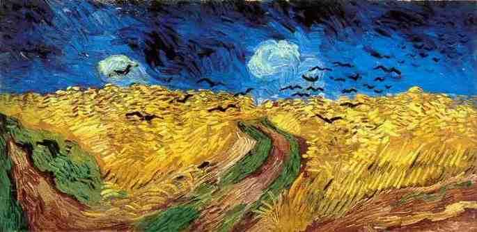

Campo de trigo com corvos
Há uma crença de que o Campo de Trigos com Corvos seja o último quadro do pintor. Por causa do conteúdo da obra, "o céu ameaçador, os corvos e o caminho de um beco sem saída", alguns acreditam que eles "se referem ao fim de sua vida se aproximando. Mas isso é apenas um mito persistente. Na vanguarde, ele fez várias outras obras depois desta".[2] É possível que Raízes da Árvore ou Daubigny's Garden tenham sido suas últimas obras. Van Gogh escreveu sobre a obra em uma carta para o seu irmão Theo e sua cunhada Johanna: Então - uma vez de volta ao trabalho - o pincel, no entanto, quase caindo de minhas mãos e - sabendo claramente o que eu queria, pintara mais três telas grandes desde então. Eles são imensos trechos de campos de trigo sob céus turbulentos, e fiz com o objetivo de tentar expressar tristeza e solidão extrema. Vocês verão isso em breve, espero - pois espero trazê-los em Paris o mais rápido possível , já que quase acredito que essas telas vão te dizer o que não posso dizer em palavras, o que considero saudável e fortificante sobre o campo[3]